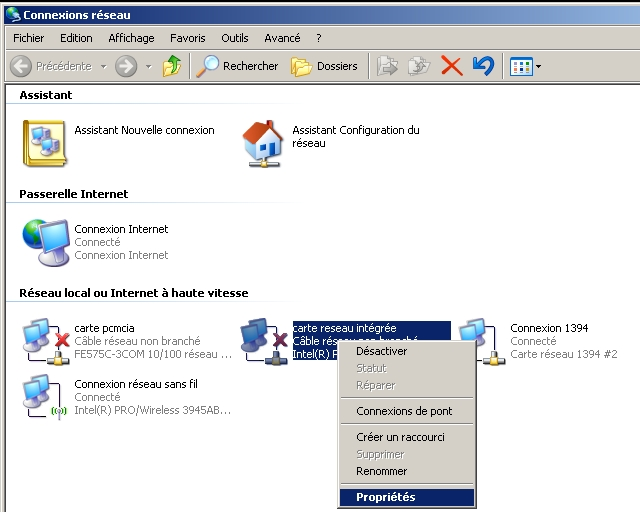
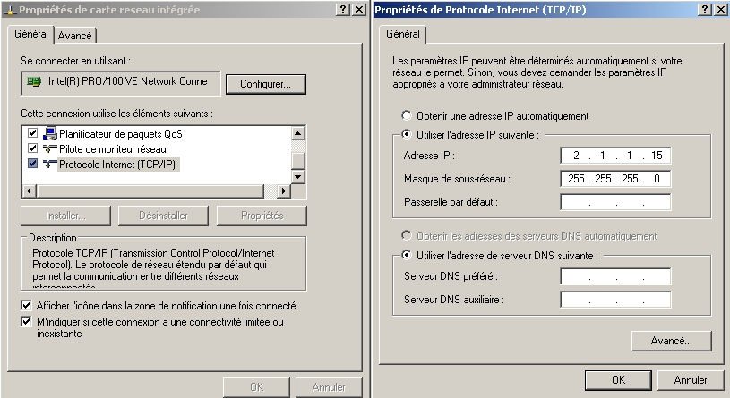
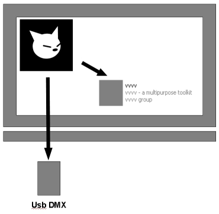
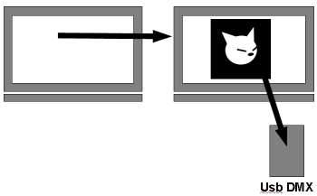
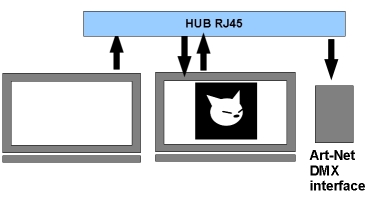

Attention, wifi must be disconnected. White Cat connects to the first network card detected. If wifi is connected, the discussion will be on that network.
It is possible that during the various stages, especially after an address change in art-net within White Cat, that you will have to restart in order to reconfigure the art-net receiving server.
You can only connect White Cat if the IP addresses are in the same family.
If the network card you use is 192.156.178.5, then sending an art-net signal to 2.255.255.255 will not work.
It makes sense then to set your art-net network cards in the address family of 2.x.x.x.
Configure the network card by doing the following:


Example: Using art-net in a third party video software (VVVV, Arkaos, Freestyler).

| Art-Net IP address | state of ethernet card | State in the menus |
|---|---|---|
| 127.0.0.1 Unicast | Disabled | Sending data to Usb Dmx / Artnet Receiver Off |
| DoubleDMX option ON |
Example: Receiving in art-net of a third party software (VVVV, PureData, Max/NSP) being the manager of the sensors and processing of their values.

| Art-Net IP Address | State of the éthernet card | State in the menus |
|---|---|---|
| network adapter connecting the two computers | Connected | Sending data in Usb Dmx / Art-net Receiver ON |
Example: Receiving in art-net of a third party software (VVVV , PureData, Max/NSP) being the manager of the sensors and processing of their values.
In this case a hub is needed!

| IP Address | State of the éthernet card | State in the menus |
|---|---|---|
| Network Card | Connected | Sending data en Art-Net / Art-net Receiver ON |